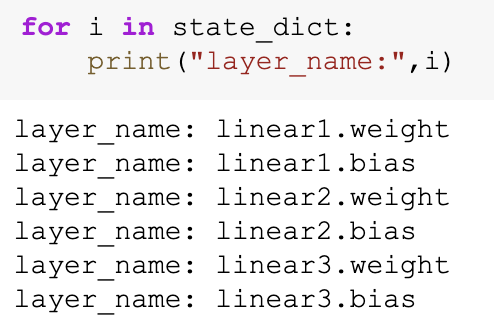
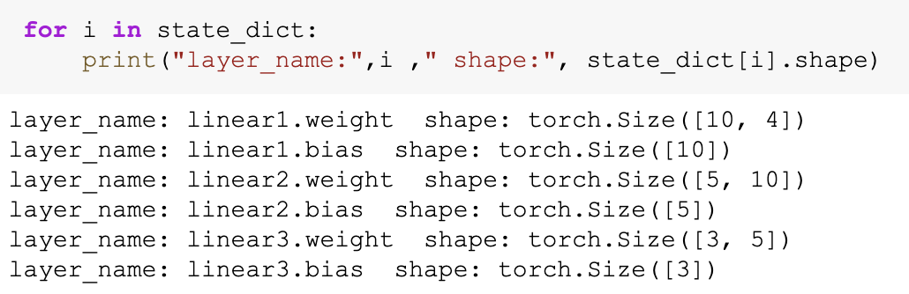
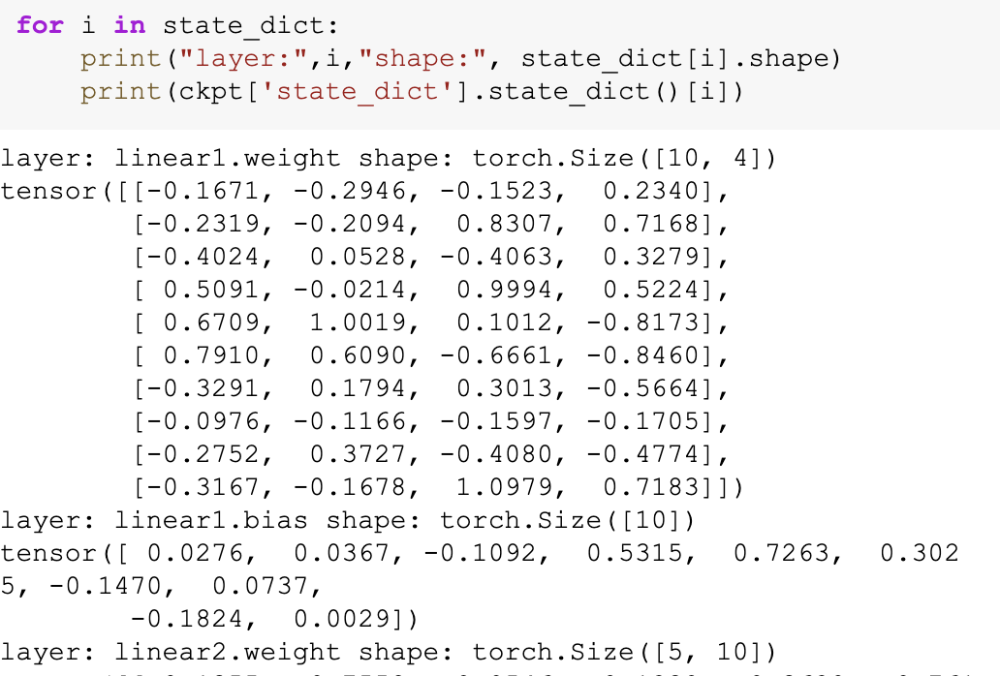

BaseNN功能详解
BaseNN是什么？
BaseNN是神经网络库，能够使用类似Keras却比Keras门槛更低的的语法搭建神经网络模型。可支持逐层搭建神经网络，深入探究网络原理。如果有如下需求，可以优先选择BaseNN：
a）简易和快速地搭建神经网络
b）支持搭建CNN和RNN，或二者的结合
c）同时支持CPU和GPU
文档涉及的部分代码见XEdu帮助文档配套项目集：https://www.openinnolab.org.cn/pjlab/project?id=64f54348e71e656a521b0cb5&sc=645caab8a8efa334b3f0eb24#public
示例代码
model = nn('cls')
train_path = '../../dataset/iris/iris_training.csv'
model.load_tab_data(train_path, batch_size=120)
model.add(layer='linear',size=(4, 10),activation='ReLU')
model.add(layer='linear',size=(10, 5), activation='ReLU')
model.add(layer='linear', size=(5, 3), activation='Softmax')
model.save_fold = './iris_ckpt'
model.train(lr=0.01, epochs=500)
解锁BaseNN基本使用方法
0. 引入包
from BaseNN import nn
1. 声明模型
model = nn('cls')
可选参数：
task：指定了这个模型要完成的任务，可选取值有：['reg','cls','gen']，
回归任务：nn(’reg’)。
分类任务：nn(’cls’)，当不指定时，task的默认值'cls'。
生成任务：nn(’gen’)。
2. 载入数据
根据数据类型，可选择使用load_img_data、load_tab_data等（持续更新中）直接载入不同类型数据的函数，在这些函数中封装了读取数据并进行预处理的功能。下面分数据类型进行说明：
针对图片文件夹类型的数据：
直接指定图片文件夹路径，再使用load_img_data函数即可完成载入数据，对图片文件夹格式有一定要求：大文件夹下包含各个按类别命名的子文件夹。例如此处使用的是经过处理的经典的MNIST手写体数字图像数据集。
image_folder_data = '../../dataset/mnist/training_set'
model.load_img_data(image_folder_data,color="grayscale",batch_size=1024)
参数说明：
train_val_ratio：0~1之间的浮点数，表示训练集的占比，默认为1。eg，数据集共1万张，train_val_ratio=0.8，则8000张训练集，2000张验证集。若传入大于1或小于0的错误比例，则参数值无效，默认整个数据集都可用于训练。此参数可用于拆分数据集为训练集和验证集。
color：设置为”grayscale”或”RGB”，表示图片的颜色空间或色彩模式，可以根据具体的需求来选择适合的模式。如果将color参数设置为”grayscale”，表示希望将图像转换为灰度图像，仅包含亮度信息。如果将color参数设置为”RGB”，表示希望保留图像的红、绿、蓝三个通道的颜色信息，得到彩色图像。
batch_size：表示在一次训练中同时处理的样本数量。通常情况下，批量大小越大，模型的收敛速度越快，但内存和计算资源的需求也会相应增加。
batch_model：是否按照minibatch的模式读取数据，若 False，则载入数据时读取全部图像，若 True，则载入数据时仅读取图像路径，训练时再读取对应batch的图像。默认为 False，Fasle要求内存大， 速度快，True则速度慢，要求内存小，如载入图像文件夹时出现内核中断，可增设batch_model=True。
num_workers：线程数，决定了有多少个子线程被用于数据加载。子线程是并行运行的，可以同时处理多个数据批次。增加 num_workers 的数值时，可以加快数据批次的寻找速度，这通常会提高训练的速度，因为模型等待数据的时间减少了，但增大内存开销和CPU负荷。此参数用来控制数据加载过程中的线程数量。适当增加这个数值可以加速训练，但也要注意不要超出你的硬件限制。默认为0，一般而言设置num_workers最大为CPU核心数。
classes：类别列表（列表）或字典，表示数据集中的label中存储的数组各个位置标签所代表的意义，一般适用于载入图片形式数据集训练图像分类模型。可以不传入，若不传入，则推理结果将会是认为结果的下标。若传入，则推理结果将自动转化为将原结果作为下标的数组中的对应内容。
classes可传参数兼容列表，字典形式(以下三种形式均可)。
classes = ['cat','dog']
classes = {0:'cat',1:'dog'}
classes = {'cat':0, 'dog':1} # 与词表形式统一
注意：索引是数值类型（int)，类别名称是字符串（str)，即哪怕类别名也是数字0,1,…字典的键和值也有区别，例如：
# 正确示例
classes = {0:'0',1:'1'} # 索引to类别
classes = {'0':0, '1':1} # 类别to索引
# 错误示例
classes = {0:0,1:1}
classes = {'0':'0', '1':'1'}
关于图片数据集预处理：
载入图片数据前如需对图像数据集进行预处理，最常见的例如做尺寸调整，可先调用已经内置的torchvision对图片数据集进行预处理再载入模型进行训练，只需在load_img_data图片数据集时增加一个transform的参数。
此处为对数据进行单个步骤的简单处理。
model.load_img_data('MNIST',transform={"Resize":(128,128)})
若要对图片数据进行多次处理的复杂操作，可以采用如下代码，将多个处理方式设置入参数，在执行时这些操作也会被按顺序执行。
model.load_img_data('catdog',transform={"Resize":(128,128),"RandomResizedCrop":224,"RandomHorizontalFlip":0.5})
方法说明: Resize:对图片尺寸进行调整。
RandomResizedCrop:对图片尺寸进行随机缩放后裁剪为固定尺寸。
RandomHorizontalFlip:依照某概率对图片进行水平翻转。
支持的操作即为torchvision中的transforms包括的所有方式，如下表所列。
| 类别 | 转换名称 | 函数 | 设置示例 |
|---|---|---|---|
| 裁剪 | 随机裁剪 | RandomCrop | (32, 32) |
| 裁剪 | 中心裁剪 | CenterCrop | (32, 32) |
| 裁剪 | 随机长宽比裁剪 | RandomResizedCrop | size=224, scale=(0.08, 1.0), ratio=(0.75, 1.33), interpolation=2 |
| 裁剪 | 上下左右中心裁剪 | FiveCrop | (32, 32) |
| 裁剪 | 上下左右中心裁剪后翻转 | TenCrop | size=(32, 32), vertical_flip=False |
| 翻转和旋转 | 依概率p水平翻转 | RandomHorizontalFlip | 0.5 |
| 翻转和旋转 | 依概率p垂直翻转 | RandomVerticalFlip | 0.5 |
| 翻转和旋转 | 随机旋转 | RandomRotation | (0, 180) |
| 图像变换 | 尺寸调整 | Resize | (128, 128) |
| 图像变换 | 标准化 | Normalize | mean=(0.485, 0.456, 0.406), std=(0.229, 0.224, 0.225) |
| 图像变换 | 转为tensor | ToTensor | 无参数设置示例 |
| 图像变换 | 填充 | Pad | 4 |
| 图像变换 | 修改亮度、对比度和饱和度 | ColorJitter | brightness=0.2, contrast=0.2, saturation=0.2, hue=0.1 |
| 图像变换 | 转灰度图 | Grayscale | 1 |
| 图像变换 | 线性变换 | LinearTransformation | transformation_matrix, mean_vector |
| 图像变换 | 仿射变换 | RandomAffine | degrees=30, translate=(0.1, 0.1), scale=(0.8, 1.2), shear=10 |
| 图像变换 | 依概率p转为灰度图 | RandomGrayscale | 0.1 |
| 图像变换 | 将数据转换为PILImage | ToPILImage | 无参数设置示例 |
| 图像变换 | 自定义Lambda变换 | Lambda | lambda x: x.div(255) |
针对特征表格类型的数据：
指定表格路径，再使用load_tab_data函数即可完成载入数据，对表格的要求：csv格式，纵轴为样本，横轴为特征，第一行为表头，最后一列为标签，且要求数据类型为数值类型并无缺失值。例如此处我使用的是经过处理的经典的Iris鸢尾花数据集。
train_path = '../../dataset/iris/iris_training.csv'
model.load_tab_data(train_path, batch_size=120)
batch_size：表示在一次训练中同时处理的样本数量。通常情况下，批量大小越大，模型的收敛速度越快，但内存和计算资源的需求也会相应增加。
num_workers：线程数，决定了有多少个子线程被用于数据加载。子线程是并行运行的，可以同时处理多个数据批次。增加 num_workers 的数值时，可以加快数据批次的寻找速度，这通常会提高训练的速度，因为模型等待数据的时间减少了，但增大内存开销和CPU负荷。此参数用来控制数据加载过程中的线程数量。适当增加这个数值可以加速训练，但也要注意不要超出你的硬件限制。默认为0，一般而言设置num_workers最大为CPU核心数。
针对NPZ数据集类型的数据：
指定NPZ数据集路径，再使用load_npz_data函数即可完成载入数据。NPZ格式，是numpy的一种压缩格式，对NPZ数据集的要求：npz格式(numpy zip)，其中至少应该拥有两个键，分别为data与label，其中data中存储的应为训练数据信息，label中存储的应为数据所对应的标签信息（应为数组形式）。
详见案例：姿态识别进阶-循环神经网络
train_path = '../../dataset/dataset.npz'
model.load_npz_data(train_path, batch_size=5000,classes=["walking","waving","stretching"])
参数说明：
batch_size：表示在一次训练中同时处理的样本数量。通常情况下，批量大小越大，模型的收敛速度越快，但内存和计算资源的需求也会相应增加。
classes：表示数据集中的label中存储的数组各个位置标签所代表的意义。可以不传入，若不传入，则推理结果将会是认为结果的下标。若传入，则推理结果将自动转化为将原结果作为下标的数组中的对应内容。
num_workers：指定线程数，决定了有多少个子线程被用于数据加载。子线程是并行运行的，可以同时处理多个数据批次。增加 num_workers 的数值时，可以加快数据批次的寻找速度，这通常会提高训练的速度，因为模型等待数据的时间减少了，但增大内存开销和CPU负荷。此参数用来控制数据加载过程中的线程数量。适当增加这个数值可以加速训练，但也要注意不要超出你的硬件限制。默认为0，一般而言设置num_workers最大为CPU核心数。
小帖士（井号后面是运行结果）：
import numpy as np
data = np.load('dataset.npz')
print(data)
# <numpy.lib.npyio.NpzFile object at 0x7f319c448ac0>
print(data['label']) # 这是一个三分类标签数据，它是二维数据，每一条数据里面是三分类独热编码标签。
# array([[1, 0, 0],
# ...,
# [0, 0, 1]])
print(data['data']) # 这是一个高维数据，每一条数据对应一个标签，但是数据本身不是一维的，而是高纬的。
# array([[[ 4.60664570e-01, 2.78294533e-01, -3.56185764e-01, ...,
# 9.21180844e-01, 1.94783360e-01, 9.93974388e-01],
# [ 4.62414086e-01, 2.83538818e-01, -3.53962898e-01, ...,
# 9.16427970e-01, 1.96989119e-01, 9.91852582e-01],
# [ 4.63086247e-01, 2.80452102e-01, -3.24477255e-01, ...,
# 9.19000983e-01, 1.50782943e-01, 9.93449986e-01],
# ...,
# [ 4.34215039e-01, 4.27498937e-01, 3.03461671e-01, ...,
# 8.96103501e-01, -4.72080037e-02, 9.73582983e-01]]])
len(data[’data’])和len(data[’label’])是相等的。
对于案例《姿态识别进阶-循环神经网络》
来说：data['label'].shape是(19, 3)，data['data'].shape是(19, 30, 132)。
type(data['data'])的运行结果是numpy.ndarray，type(data['data'])的运行结果是numpy.ndarray。
拓展——自行编写代码载入数据：
如您想要尝试自行编写代码加载数据并做预处理，需生成NumPy数组格式的特征x 和标签y（不同的框架和模型可能对输入数据的格式有所要求有所不同，这是BaseNN的要求），载入时可使用如下代码，此方法比较灵活。
model.load_dataset(x, y)
也支持设置线程数参数num_workers，此参数用来控制数据加载过程中的线程数量。适当增加这个数值可以加速训练，但也要注意不要超出你的硬件限制。默认为0，一般而言设置num_workers最大为CPU核心数。
此处采用Iris鸢尾花数据集和MNIST手写体数字图像数据集作为示例。
读取并载入csv格式鸢尾花数据集（鸢尾花数据集以鸢尾花的特征作为数据来源，数据集包含150条数据，有4维（花萼长度、宽度和花瓣长度、宽度），分为3类（setosa、versicolour、virginica），每类50条数据）：
数据集共有5列，其中前四列为特征，第五列为鸢尾花的类别，即标签。
# 训练数据
train_path = '../dataset/iris/iris_training.csv'
x = np.loadtxt(train_path, dtype=float, delimiter=',',skiprows=1,usecols=range(0,4)) # 读取前四列，特征
y = np.loadtxt(train_path, dtype=int, delimiter=',',skiprows=1,usecols=4) # 读取第五列，标签
# 测试数据
test_path = '../dataset/iris/iris_test.csv'
test_x = np.loadtxt(test_path, dtype=float, delimiter=',',skiprows=1,usecols=range(0,4)) # 读取前四列，特征
test_y = np.loadtxt(test_path, dtype=int, delimiter=',',skiprows=1,usecols=4) # 读取第五列，标签
# 将数据载入
model.load_dataset(x, y)
上面这段代码使用了NumPy库加载和预处理Iris鸢尾花数据集。代码首先指定了训练数据集和测试数据集的路径，然后使用np.loadtxt函数从CSV文件中读取特征和标签数据，并存储在x和y变量中。测试数据也以相同的方式加载并存储在test_x和test_y变量中。最后，通过调用model.load_dataset(x, y)将数据集载入模型。
读取并载入手写体图像数据集（数据集包含了0-9共10类手写数字图片，都是28x28大小的灰度图）：
# 定义读取训练数据的函数
def read_data(path):
data = []
label = []
dir_list = os.listdir(path)
# 将顺序读取的文件保存到该list中
for item in dir_list:
tpath = os.path.join(path,item)
# print(tpath)
for i in os.listdir(tpath):
# print(item)
img = cv2.imread(os.path.join(tpath,i))
imGray = cv2.cvtColor(img, cv2.COLOR_BGR2GRAY)
# print(img)
data.append(imGray)
label.append(int(item))
x = np.array(data)
y = np.array(label)
x = np.expand_dims(x, axis=1)
return x, y
# 读取训练数据
train_x, train_y = read_data('../dataset/mnist/training_set')
# 载入数据
model.load_dataset(train_x, train_y)
上面这段代码中定义了一个名为read_data的函数，该函数用于从指定路径中读取MNIST训练数据。该函数首先遍历给定路径中的文件夹，然后读取每个文件夹中的图像数据，并将其转换为灰度图像。读取的图像数据被存储在data列表中，相应的标签存储在label列表中。最后，通过np.array将数据和标签转换为NumPy数组，并使用np.expand_dims函数在数据维度上进行扩展，以适应模型的输入要求。
3. 搭建模型
逐层添加，搭建起模型结构，支持CNN（卷积神经网络）和RNN（循环神经网络）。注释标明了数据经过各层的尺寸变化。在模型搭建中要特别注意数据经过各层的尺寸变化，以设置正确的size值。
model.add(layer='linear',size=(4, 10),activation='relu') # [120, 10]
model.add(layer='linear',size=(10, 5), activation='relu') # [120, 5]
model.add(layer='linear', size=(5, 3), activation='softmax') # [120, 3]
以上使用add()方法添加层，参数layer='linear'表示添加的层是线性层，size=(4,10)表示该层输入维度为4，输出维度为10，activation='relu'表示使用relu激活函数。以上代码搭建的是一个输入维度为4，输出维度为3，隐藏层数量为2的全连接神经网络。如要搭建更加复杂的神经网络，可前往附录1了解更详细的add()方法使用，还呈现了搭建全连接神经网络结构、简单卷积神经网络LeNet结构，也呈现了与MMEdu内置的SOTA模型对应的MobileNet网络、ResNet等，以及循环神经网络、扩散模型等搭建说明。
4. 模型训练
模型训练可以采用以下函数，训练前需设置模型保存路径，训练时需设置lr、epochs等超参数。
# 设置模型保存的路径
model.save_fold = 'checkpoints/irs_ckpt'
# 模型训练
model.train(lr=0.01, epochs=500)
参数lr为学习率，epochs为训练轮数。
从训练类型的角度，可以分为正常训练和继续训练。
使用model.save_fold设置模型保存的路径，模型权重文件格式为.pth文件格式。默认保存为保存路径下的命名为basenn.pth的文件，如需修改保存命名，可在train中加入一个新参数filename，设置方法为filename='XX.pth'。
正常训练
model = nn('cls')
model.add(layer='linear',size=(4, 10),activation='relu') # [120, 10]
model.add(layer='linear',size=(10, 5), activation='relu') # [120, 5]
model.add(layer='linear', size=(5, 3), activation='softmax') # [120, 3]
model.load_dataset(x, y)
model.save_fold = 'checkpoints' # 指定模型保存路径
model.train(lr=0.01, epochs=1000)
model.save_fold表示训练出的模型文件保存的文件夹。
继续训练
checkpoint = 'checkpoints/basenn.pth' # 指定已有模型的权重文件路径
model.train(lr=0.01, epochs=1000, checkpoint=checkpoint)
checkpoint为现有模型路径，当使用checkpoint参数时，模型基于一个已有的模型继续训练，不使用checkpoint参数时，模型从零开始训练。
训练篇拓展——分数据类型看训练代码
针对不同类型的数据类型，载入数据、搭建模型和模型训练的代码会略有不同。深度学习常见的数据类型介绍详见附录4。
第一种：图片文件夹类型
可直接指定图片文件夹，同时针对图片数据可增加classes参数设置（推理时会输出预测的类别名称，如不设置此参数则只输出类别标签），参考代码如下：
model = nn('cls')
model.load_img_data("./mnist/training_set",color="grayscale",batch_size=32,classes=classes)
model.add('Conv2D', size=(1, 6),kernel_size=( 5, 5), activation='ReLU')
model.add('AvgPool', kernel_size=(2,2))
model.add('Conv2D', size=(6, 16), kernel_size=(5, 5), activation='ReLU')
model.add('AvgPool', kernel_size=(2,2))
model.add('linear', size=(256, 120), activation='ReLU')
model.add('linear', size=(120, 84), activation='ReLU')
model.add('linear', size=(84, 10), activation='Softmax')
model.add(optimizer='SGD')
model.save_fold = 'new_mn_ckpt'
model.train(lr=0.01, epochs=200, checkpoint="new_mn_ckpt/basenn.pth") # 继续训练
如自己进行对图片数据处理后，使用load_dataset(x, y)载入数据，可使用如下代码：
model = nn('cls')
model.load_dataset(x,y,classes=classes) # classes是类别列表（列表） //字典
model.add('conv2d',...)
model.train(lr=0.01,epochs=1)
第二种：特征类型
可直接指定csv格式的表格完成模型训练，参考代码如下：
model = nn('cls')
train_path = '../../dataset/iris/iris_training.csv'
model.load_tab_data(train_path, batch_size=120)
model.add(layer='linear',size=(4, 10),activation='ReLU') # [120, 10]
model.add(layer='linear',size=(10, 5), activation='ReLU') # [120, 5]
model.add(layer='linear', size=(5, 3), activation='Softmax') # [120, 3]
model.save_fold = './iris_ckpt'
model.train(lr=0.01, epochs=500)
对表格的要求：csv格式，纵轴为样本，横轴为特征，第一行为表头，最后一列为标签。
当然您也可以自行编写代码来加载数据并进行预处理，然后将生成的输入特征 x
和目标标签 y
传递给模型。针对特征数据，使用BaseNN各模块的示例代码即可。
model = nn('cls')
model.load_dataset(x,y)
model.add('linear',...)
model.save_fold = './iris_ckpt'
model.train(lr=0.01,epochs=1)
第三种：文本类型
在做文本生成等NLP（自然语言处理）领域项目时，一般搭建RNN网络训练模型，训练数据是文本数据，参考代码如下：
model = nn('cls')
model.load_dataset(x,y,word2idx=word2idx) # word2idx是词表（字典）
model.add('lstm',size=(128,256),num_layers=2)
model.train(lr=0.001,epochs=1)
5. 模型推理
可使用以下函数进行推理：
model = nn('cls') # 声明模型
checkpoint = 'checkpoints/iris_ckpt/basenn.pth' # 现有模型路径
result = model.inference(data=test_x, checkpoint=checkpoint) # 直接推理
model.print_result(result) # 输出字典格式结果
checkpoint为已有模型路径，即使用现有的模型进行推理。
直接推理的输出结果数据类型为NumPy的二维数组，表示各个样本的各个特征的置信度。
输出字典格式结果的数据类型为字典，格式为{样本编号：{预测值：x，置信度：y}}。print_result()函数调用即输出，但也有返回值。
参数data为待推理的测试数据，该参数必须传入值，可以传入NumPy数组或文件路径或者dataloader类型的数据，也可以传入list（最终还是会转成numpy数组）。除了NumPy数组格式和list数组格式的特征数据，以及传入dataloader类型的数据进行批量的模型推理外，还可以直接传入文件路径进行模型推理，下面我们分文件类型说明。
**注：**推理时传入的数据要和模型训练时使用的训练集的数据保持一致。
推理篇拓展——直接传文件路径完成推理
针对单个图片文件的推理：
model = nn('cls')
test_x = "mnist/val_set/7/83.jpg"
result = model.inference(data=test_x, checkpoint="mn_ckpt/basenn.pth") # 推理某张图片
model.print_result()
针对图片文件夹的推理：
model = nn('cls')
test_x = "mnist/val_set/7"
result = model.inference(data=test_x, checkpoint="mn_ckpt/basenn.pth") # 推理整个测试集
model.print_result()
针对特征表格文件的推理：
简便方法：
model = nn('cls')
test_path = 'data/iris_test.csv'
res = model.inference(test_path, checkpoint="iris_ckpt/basenn.pth",label=True)
model.print_result(res)
使用此方法，对表格文件有严格要求：csv格式，纵轴为样本，横轴为特征，第一行为表头，最后一列为标签
label=True：csv文件中含标签列，比如iris_test.csv；False为没有标签，如果指定的csv最后一列不是标签，则使用False。
常规方法：先读取文件的特征列。
import numpy as np
model = nn('cls')
test_path = 'data/iris_test.csv'
test_x = np.loadtxt(test_path, dtype=float, delimiter=',',skiprows=1,usecols=range(0,4))
res = model.inference(test_x, checkpoint="checkpoints/iris_ckpt/basenn.pth")
model.print_result(res)
针对文本数据的推理：
model = nn('cls')
data = '长'
checkpoint = 'xxx.pth'
result = model.inference(data=data, checkpoint=checkpoint)
index = np.argmax(result[0]) # 取得概率最大的字的索引，当然也可以取别的，自行选择即可
word = model.idx2word[index] # 根据词表获得对应的字
result为列表包含两个变量：[output, hidden]。output为NumPy数组，里面是一系列概率值，对应每个字的概率。hidden为高维向量，存储上下文信息，代表”记忆”，所以生成单个字可以不传入hidden，但写诗需要循环传入之前输出的hidden。
6. 模型文件格式转换
使用BaseNN训练好的模型权重会以.pth格式的文件保存到本地，但是以.pth格式保存文件不利于模型的部署以及推理，因此我们希望将.pth文件转换成.onnx格式的文件，这样就可以将模型快速部署并进行推理啦。比如，可以使用XEduHub工具，利用转换好的onnx文件进行模型推理。
模型格式转换代码如下：
from BaseNN import nn
model = nn()
model.convert(checkpoint="basenn_cd.pth",out_file="basenn_cd.onnx")
参数说明：
checkpoint: 指定要转换的pth模型文件路径。
out_file: 指定转换出的onnx模型文件路径。
opset_version：指定转换出的onnx模型算子的版本，默认为10，一般情况下不需要进行设置，除非出现了算子版本不符而导致的报错。【可选参数】
ir_version：指定中间表示（Intermediate Representation, 简称 IR）规范的版本，一个整数（int）类型的参数。当前可选范围为1～12，默认为6。在计算机编程中，中间表示是一种数据结构或代码，它介于原始代码和机器码之间。它通常用于编译器或类似工具中，作为转换和优化代码的一个步骤。指定中间表示的版本，可方便根据不同的需求和优化目标选择最合适的 IR 规范。【可选参数】
注意！：在转换为onnx文件后会将模型的元信息，如数据类型、输入尺寸等也写入模型文件，而之前版本的BaseNN训练得到的模型文件不含有这些信息，因此如果想要将之前的BaseNN训练得到的文件进行转换，需要基于原先的模型文件使用最新的BaseNN版本再进行一轮训练！
模型转换后生成一个ONNX模型和示例代码，示例代码的使用详见后文。
高级功能
1.提取CNN特征
图像特征提取是计算机视觉中的重要研究领域之一，是计算机视觉中的一个关键步骤，它涉及将图像转换成一组有意义的特征向量，以便于后续的图像分析和识别任务。CNN（卷积神经网络）特征提取方法是一种基于深度学习的特征提取方法，通过卷积层、池化层等多个网络层的处理，可以提取出具有高层次抽象能力的特征表示，被广泛应用于图像分类、目标检测等领域。
BaseNN中提供了一个CNN特征提取工具，可使用BaseNN的model.extract_feature()函数通过指定预训练模型来提取图像特征，使用ResNet预训练模型可将一张图像提取为1000维的特征（该预训练模型是在imagenet上训练的千分类模型，所以输出特征的维度是1000维），输出一个1行1000列的数组。
# 声明模型
model = nn('cls')
# 读取图像文件
img = cv2.imread('small/0/5818.png')
# 指定resnet18提取图像特征
feature = model.extract_feature(img, pretrain='resnet18')
第一次下载预训练模型有点慢需要耐心等待，再次运行则无需下载。
2.网络中特征可视化
BaseNN内置visual_feature函数可呈现数据在网络中传递的过程。特征可视化可以帮助我们更好地理解模型在处理数据时的内部工作原理，并通过这种方式来进一步提高模型的性能和效果。
如输入数据为图片，指定图片和已经训练好的模型，可生成一张展示逐层网络特征传递的图片。
import cv2
from BaseNN import nn
model = nn('cls')
model.load('mn_ckpt/basenn.pth') # 保存的已训练模型载入
path = 'test_IMG/single_data.jpg'
img = cv2.imread(path,flags = 0) # 图片数据读取
model.visual_feature(img,in1img = True) # 特征的可视化

如输入数据为一维数据，指定数据和已经训练好的模型，可生成一个txt文件展示经过各层后的输出。
import NumPy as np
from BaseNN import nn
model = nn('cls')
model.load('checkpoints/iris_ckpt/basenn.pth') # 保存的已训练模型载入
data = np.array(test_x[0]) # 指定数据,如测试数据的一行
model.visual_feature(data) # 特征的可视化
3.查看模型结构
model.print_model()
无参数。
4.自定义随机数种子
默认初始化是随机的，因此每次模型训练效果可能存在差异。可以使用set_seed()函数设定随机数种子，使得训练结果可被其他人复现。一旦指定，则每次训练结果一致。使用方法如下：
model = nn()
model.set_seed(1235)
model.add(...)
...
model.train(...)
注：设定随机数种子set_seed()应当在搭建网络add()之前。在搭建机器学习模型之前，通常建议设置随机数种子。这样做可以使得在每次运行时，生成的随机数序列都是相同的，从而使得模型的可重复性更高。这对于模型调试、验证模型效果、比较不同模型效果等方面都非常有帮助。随机数种子的选择通常应该是随意的，只要您能记住或记录下来使用的种子即可。并且，种子的选择并不会影响模型的效果，只会影响结果的可重复性。
5.自定义损失函数
损失函数（或称目标函数、优化评分函数）是编译模型时所需的参数之一。在机器学习和深度学习中，模型的训练通常涉及到一个优化过程，即通过不断调整模型的参数，使得模型在训练数据上的预测结果与实际结果的差距最小化。这个差距通常使用一个称为”损失函数”的指标来衡量。损失函数通常是一个关于模型参数的函数，用于度量模型预测结果与实际结果之间的差异。在模型训练过程中，模型会根据损失函数的值来调整自己的参数，以减小损失函数的值。
默认的损失函数是交叉熵损失函数，允许选择不同的损失函数，支持的损失函数见附录。自选损失函数方法如下：
model.train(...,loss="MSELoss")
6.自定义评价指标
评价指标用于评估当前训练模型的性能。当模型编译后，评价指标应该作为
metrics的参数来输入。默认无，需要自行设置评价指标。支持的评价指标：acc（准确率），mae（平均绝对误差），mse（均方误差）。
自选评价指标方法如下：
model.train(...,metrics="acc")
当然，在train函数中设置的metrics的参数仅是模型在训练集上的评价结果。如需评估模型在验证集上的效果，还需配合模型推理完成。
由此拓展-自定义评价函数和训练策略
一般可以自定义一个分类正确率计算函数来评估模型效果，主要可以通过计算验证集上的分类准确率完成。
# 定义一个计算分类正确率的函数
def cal_accuracy(y, pred_y):
res = pred_y.argmax(axis=1)
tp = np.array(y)==np.array(res)
acc = np.sum(tp)/ y.shape[0]
return acc
# 计算分类正确率
print("分类正确率为：",cal_accuracy(y_val, result)) # y_val指代验证集的真实值，result指代验证集的推理结果
由于model.train在完全训练结束之后，才能进行其他操作，如何判断提前终止训练，或者使用自定义的验证策略来验证模型效果呢？可以用循环来实现。 参考代码如下：
for i in range(5):
model.train(lr=0.01, epochs=5, metrics='acc')
result = model.inference(x_val, checkpoint=checkpoint)
acc = cal_accuracy(y_val, result) # 调用自定义的验证计算函数
print('验证集准确率: {:.2f}%'.format(100.0 * acc))
if acc > 0.7: # 如果准确率大于70%，提前结束训练
break
7.探秘权重文件
BaseNN 0.3.0以上，支持查看pth文件中的权重信息。
首先将pth文件读入一个变量state_dict:
import torch
ckpt = torch.load('iris_ckpt/basenn.pth')
state_dict = ckpt['state_dict'].state_dict()
1）查看模型里面有哪些层，及各个层的名称
for i in state_dict:
print('这一层的名字是:',i)
输出结果：
layer_name: linear1.weight
layer_name: linear1.bias
layer_name: linear2.weight
layer_name: linear2.bias
layer_name: linear3.weight
layer_name: linear3.bias

可以看到，权重主要包括两种参数，一种是weight，一种是bias。其中weight，指“重”，特征的重要程度，bias值“偏”，偏离原点的程度。回想一下我们初中学习的一次函数 y=w*x+b 就是这样的含义。上图中，每一层都分别有weight和bias构成。
2）查看模型里面上述层的形状（每层的大小）
for i in state_dict:
print('层：', i ," 的形状是", state_dict[i].shape)
输出结果：
layer_name: linear1.weight shape: torch.Size([10, 4])
layer_name: linear1.bias shape: torch.Size([10])
layer_name: linear2.weight shape: torch.Size([5, 10])
layer_name: linear2.bias shape: torch.Size([5])
layer_name: linear3.weight shape: torch.Size([3, 5])
layer_name: linear3.bias shape: torch.Size([3])

通过这一功能，可以简单计算一个模型的参数量有多少。
例如在这个例子中，我们可以计算，参数量一共是：10*4+10+5*10+5+3*5+3 个参数。但是通常bias可以忽略不计。至于为什么有10*4 ，这是因为第一个全连接层用的是size=(4, 10)，这表示，4个神经元的输入层，与10个神经元的隐藏层相连接。这种情况下，4个神经元中的任意一个神经元，都与10个下一层神经元相连接，显然，这里的参数量为10+10+10+10=10*4。
3）查看模型里各层参数的值
for i in state_dict:
print(ckpt['state_dict'].state_dict()[i])
输出结果：
layer: linear1.weight shape: torch.Size([10, 4])
tensor([[-0.1671, -0.2946, -0.1523, 0.2340],
[-0.2319, -0.2094, 0.8307, 0.7168],
[-0.4024, 0.0528, -0.4063, 0.3279],
[ 0.5091, -0.0214, 0.9994, 0.5224],
[ 0.6709, 1.0019, 0.1012, -0.8173],
[ 0.7910, 0.6090, -0.6661, -0.8460],
[-0.3291, 0.1794, 0.3013, -0.5664],
[-0.0976, -0.1166, -0.1597, -0.1705],
[-0.2752, 0.3727, -0.4080, -0.4774],
[-0.3167, -0.1678, 1.0979, 0.7183]])
layer: linear1.bias shape: torch.Size([10])
tensor([ 0.0276, 0.0367, -0.1092, 0.5315, 0.7263, 0.3025, -0.1470, 0.0737,
-0.1824, 0.0029])
layer: linear2.weight shape: torch.Size([5, 10])
tensor([[-0.1355, 0.7558, 0.0546, 0.1230, -0.3620, -0.7619, -0.3141, -0.0608,
-0.0821, 0.6960],
[-0.2451, -0.8411, -0.1880, 0.2396, 0.4853, 1.0186, -0.0673, -0.2480,
0.2201, -0.7702],
[-0.0184, -0.1989, -0.2507, -0.0921, 0.3093, 0.7214, -0.0233, 0.2101,
-0.2183, -0.2256],
[ 0.1090, -0.1517, 0.1152, -0.2598, -0.0861, 0.1829, -0.3004, -0.0835,
0.0937, -0.1331],
[ 0.1686, 0.8030, -0.2627, 0.5540, -0.0460, -0.4488, -0.1358, -0.2360,
0.0522, 0.7765]])
layer: linear2.bias shape: torch.Size([5])
tensor([-0.8387, 0.7115, 0.5185, -0.1147, 0.0033])
layer: linear3.weight shape: torch.Size([3, 5])
tensor([[-0.7702, 0.6576, 0.5163, -0.0201, -1.1092],
[-1.1128, 0.2404, 0.2973, 0.3267, 0.1670],
[ 0.5992, -1.0186, -0.7638, 0.3445, 0.5820]])
layer: linear3.bias shape: torch.Size([3])
tensor([ 0.6430, 0.3829, -0.1744])

我们知道了参数的值之后，可以尝试计算，当一条新数据输入网络后，模型会经历怎样的计算，请你试一试搭建一个简单的神经网络，试一试这个计算过程，你能不能手动实现呢？